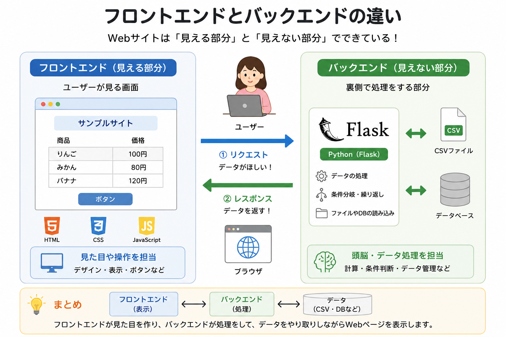

フロントエンドは、ユーザーが見る画面の部分。
バックエンドは、裏側でデータ処理を行う部分。
Flaskは主にバックエンドとして使われる。
Flaskとは、PythonでWebアプリを作るためのフレームワーク。
少ないコードでWebページを表示したり、データ処理を行ったりできる。
授業では、Flaskのインストール、基本構成、
for文・if文、CSVファイルの読み込みなどを行なった。

フロントエンドは、ユーザーが見る画面の部分。
バックエンドは、裏側でデータ処理を行う部分。
Flaskは主にバックエンドとして使われる。
Flaskでは、app.pyに処理を書き、HTMLファイルを表示する。
@app.route("/") は、トップページにアクセスされた時に実行される処理。
render_templateを使うことでHTMLファイルを表示できる。
from flask import Flask, render_template
app = Flask(__name__)
@app.route('/')
def index():
return render_template("index.html")
if __name__ == '__main__':
app.run()
Flaskでは、Pythonで作った変数をHTMLに渡して表示できる。
HTML側では {{ 変数名 }} の形で表示。
txtという名前でHTMLに文字を渡す。
a = "こんにちは"
@app.route('/')
def index():
return render_template("index.html", txt=a)
{{ txt }} を使うことで、Pythonの変数を表示できる。
<body>
<h1>テスト</h1>
<div>
てすとです。<br>
{{ txt }}<br>
</div>
</body>
for文を使うと繰り返し表示ができ、
if文を使うと条件によって表示を変えらる。
i % 2 は、2で割った余りを表す。
余りが0なら偶数、それ以外なら奇数。
{% for i in range(10) %}
{% if i % 2 == 0 %}
{{ txt }} --偶数-- {{ i }}<br>
{% else %}
{{ txt }} --奇数-- {{ i }}<br>
{% endif %}
{% endfor %}
CSVファイルを読み込むことで、
表や一覧のデータをWebページに表示できる。
csv.readerを使ってCSVファイルを読み込み、 HTMLに渡している。
from flask import Flask, render_template
from csv import reader
app = Flask(__name__)
@app.route('/')
def index():
with open('./mmcsv.csv', 'r',
encoding="utf-8") as csv_file:
csv_reader = reader(csv_file)
list_mm = list(csv_reader)
return render_template(
"index.html",
mmlist=list_mm
)
if __name__ == '__main__':
app.run()
for文を使ってCSVデータを1行ずつ表示。
{% for data in mmlist %}
{% if data[1] == "場所" %}
{{ data[1] }}<br>
{% else %}
<a href="{{ data[3] }}"
target="_blank">
{{ data[1] }}
</a><br>
{% endif %}
{% endfor %}